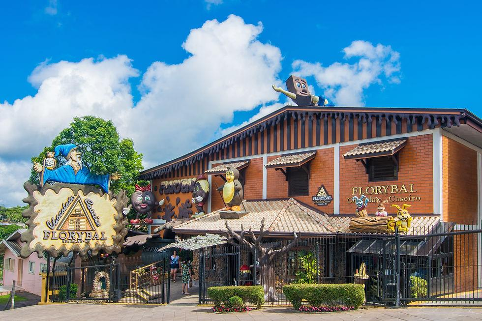
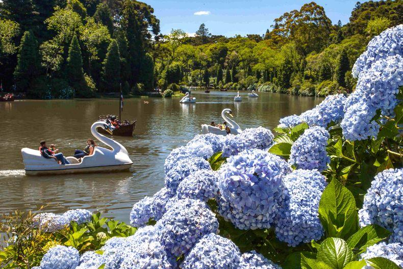
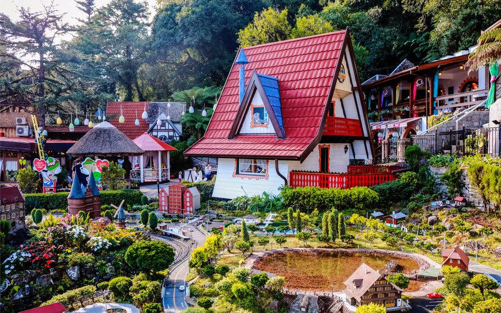

Gramado é uma cidade encantadora localizada na Serra Gaúcha, no estado do Rio Grande do Sul, Brasil. É famosa por sua arquitetura europeia, clima frio e paisagens deslumbrantes. A cidade é um destino turístico popular, especialmente durante o inverno, quando recebe visitantes de todo o país e do exterior. Gramado oferece uma variedade de atrações, incluindo festivais de cinema, parques temáticos, museus, lojas de chocolate e restaurantes que servem pratos típicos da região. A cidade também é conhecida por seu Natal Luz, um evento anual que transforma a cidade em um espetáculo de luzes e decorações natalinas. Além disso, Gramado está cercada por belas paisagens naturais, como montanhas, vales e lagos, tornando-a um destino ideal para quem busca contato com a natureza e atividades ao ar livre.


experimentar sabores e comprar deliciosas lembranças.

caminhar, apreciar a natureza e andar de pedalinho.

famosas em miniatura, ideal para passear e tirar fotos.